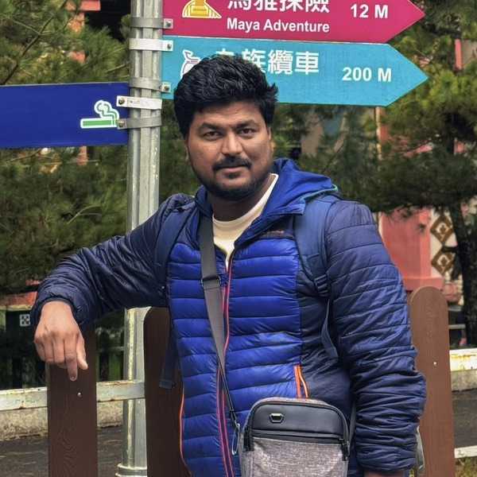

Earth scientist working at the intersection of paleoclimate, biogeochemistry, and sedimentology. My research uses stable isotopes, black carbon, and multi-proxy records from lake and marine sediments to reconstruct past climate change, wildfire history, and human–environment interactions across Asia.
C, N, O isotopes in lake sediments, organic matter, and diatoms to reconstruct past environments and biogeochemical cycles.
Tracking wildfire-derived black carbon through the terrestrial–marine continuum using elemental and isotopic signatures.
Multi-proxy sedimentary archives from lakes across Taiwan and the Himalayas to reconstruct Holocene and Quaternary climate variability.
Sedimentary records of past wildfires and typhoons and their connections to monsoon dynamics and human activity.
Tracing C and N fluxes through terrestrial, lacustrine, and marine systems over geological timescales.
Anthropogenic signatures of black carbon, heavy metals, and microplastics in sedimentary environments.